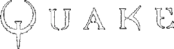

| All participants in Netquake Online Tournament are assumed to read and understand these rules and are expected to behave accordingly. The main goal of the rules is to keep the league organised and to have a level playing field, and as such they should not be regarded as a substitute for reason or common sense. While these rules are the result of careful consideration and extensive debate, it may be necessary to implement changes during the season if urgent need requires them. Should this be the case, the changes will be properly announced on the N.O.T. website. |
Teamplay
| 1. INTRODUCTION
Netquake Online Tournament is an online Netquake deathmatch competition for teams, duels, individual (FFA) and megawars. As the leagues first goal is to provide fun and entertainment for all involved, and will not result in any financial benefits for the winners, it may seem strange to have rules in the first place. However, whenever a competitive aspect is present, some rules will be necessary to make sure everyone can face each other in a fair enviroment. Furthermore, the league system and its regulations provide for smoother handling of the competition and gives it the official nature that separates a league match from regular practice games. Note: a 'game' is an encounter between 2 teams and 'map is one single period of a game. 2. GENERAL RULESA team can only enter the league if it has a working and updated homepage. The homepage needs to have a list of active members. There is no limit to the number of players in one team. Teams not fulfilling these requirement can be forbidden to enter the division by the division admin. Once the group-games have gotten underway, changes to the team are in principle prohibited. Teams will send a request to the division admin. The addition of a member may require some investigation of the admin before it can be approved. Teams should expect a delay of up to one week between sending the request and approval, which is required for the new member to play in a game. All teams are expected to behave properly and treat the opponents and admins with respect. Teams can be removed from the league for repeated offenses and teams with a known history of trouble can be denied participation. 2.1 Qualifiers Seats will be given on merit. Teams with previous experience from leagues or established reputations will not need to qualify unless the demand greatly exceeds the number of seats available. The qualifiers are mainly for new teams or teams that don't have a solid reputation (as of yet). The exact procedure for qualifiers is not fixed but largely depends on the number of teams that are above the limit. The qualifiers might be settled by pairing teams together, or they might be fought in small qualifying groups. The rules for the qualifiers will be properly announced after registration has ended for the concerning divisions. 2.2 Groups The teams of each division will be split among a number of groups. The number and size of the groups depends on the number of teams qualified for the division. For example, a division might consist of four groups of six teams each. Teams are expected to fight all opposing teams in their groups. 2.3 Games and ranking Games are won and lost according to maps. During the group
stages, each game is 'best of three': one team defeats the other either 2 maps to 0 or 2 maps to 1. 2.4 Playoffs Depending on the size and numbers of the groups in each division,
one to four teams might be able to qualify for playoffs from a single group. 2.5 Exceptions In case there are few teams enroled in the league there will be a single group and no playoffs. The team that has more points at the end of all matches will win the league. In case two or more teams at the end of all matches has the same quantity of points then will be set up a direct confrontation between the teams (or a new group in case the teams are more then two). 2.6 Match organization Since Netquake Online Tournament doesn't require an admin to be present at every game, it's very important that you ALWAYS record a demo when your team plays a game. If there should be any disputes between the clans or anything else concerning the game, you need to show a demo to prove your point. To allow the group games to finish timely, the teams are called upon to play at least one game per week. 2.7 Scheduling matches Matches are scheduled by team leaders and announced on the website. If teams can agree to play at another time then the one announced, they have to notify at least 24 hours in advance. Games have to be played within one week of the initial date. Maps are selected as follows:
Should map selection result in frequent discussions in a division, a more strict procedure will be put in place. 2.8 Before the game The matchserver is decided by both teams. A server giving approximately equal connection conditions should be found. In principle, all maps are played on the same server. However, if connection conditions deteriorate dramatically during or after one is played, the team leaders can ask to change servers for the remaining maps. In principle, both teams have to field 4 players before the game can start. Teams can be allowed to start with 3 players. The game will than be played 3 vs. 3. This is to be considered an emergency solution. Rules concerning dropping players are detailed in 2.10 During the game. 2.9 Match-settings Games are preferrentially played on servers running a recent version of the 'CRMod 6.x'. However, if such server is unavailable or only available through poor connections, the teams can agree to use a different mod. The following settings are used in Netquake Online Tournament: Official Maps: DM2, DM3, DM6, E1M2, E3M7 2.10 During the game Each team must record at least one demo of each map, as they will be required to submit one in any case. (see 3.7 After the game). The teams are allowed to have replacements waiting as spectators on the server but only if the team isn't playing from the same room (otherwise the chance of them the spectating enemy is great). Only spectators present at the start of the map, can jump in. If a player lags out he can be replaced immediately by another player or do his best to get back on server as quick as possible. Teams are responsible for sorting out their backup-plans themselves. Should a player of a team gets disconnected and no replacements are available or should extreme lag start occuring for several players, the game will be stopped (or automatically by the autopause or by voting timerstop). The match pausing can last a maximum period of 5 minutes. If the dropped player had never jumped in in that time the match continues 4 vs 3. Same for lag conditions, but the team leaders can decide to change server. If several players drop under suspicious circumstances or if the whole team just packs up and leaves, there could be additional inquiries into the matter and in a worst case-scenario the whole team might be dismissed from the season or whole league. Should a team lose a player during the first (or second) map due to connection problems and can only have 3 players ready for the second (or third) map, they are allowed to play 3 against 3. As they won't have any spectators on the server when the map gets underway, no fourth player can join during that round. All frags made during a round are counted! Frags of dropped players are added to the total (if the mod doesn't do so automatically). It is important for teams to realise that the score shown in the scoreboard might not be correct. All maps of a game are played immediately following each other, without intermediate discussions. 2.11 After the game Each team should take a screenshot of the scoreboard for each map played. The teams are required to submit at least one demo of the map(s) they won. In case no demo can be submitted within a reasonable timeframe, and at the explicit request of the other team, a map has to be replayed. Only individual maps are to be replayed; not the complete game. Under no circumstance can the map choice be altered. Depending on the result of the replayed map, the outcome of the game will be decided as if the maps were played in their original order. In case a tie-breaker map was initially needed for deciding a game but no longer after a map is replayed, it is dropped. In the case where a tiebreaker becomes necessary, it is played immediately after the replayed map, using a new randomly selected map, or the same when the teams had identical choices. 3. CHEATING Cheating is an issue for all non-LAN competitions, be it for prizes or just glory alone. Netquake Online Tournament will continue the tradition of non-tolerance that many of it's predecessors have applied. 3.1 Things we consider cheating:
3.2 Other offences
3.3 Fullbrights Fullbright skins have become an integral part of Netquake teamplay for many players. They are no longer considered cheating, and thus are allowed in Netquake Online Tournament. 3.4 Penalties Misconduct or cheating by a player or a team can lead to penalties. Depending on the severity of the misconduct, the penalties can range from a force walkover to temporary or indefinite banning of a player or team. 4. RESPONSIBILITIES It is important for the teams in Netquake Online Tournament to know exactly what is expected of them and what their responsibillities towards the administration really are. Therefore this little chapter. 6.1 Scheduling matches Teams must notify the organizer if they want to reschedule a game. They also have to contact the organizer to announce their map choice. |
Individual
Official map: Death32c |
| 1° -> N° Turn | |
| Formation of groups of at least 8 players. Direct elimination, goes to next turn the first four players that will form new groups until the final match. | |
| Timelimit: | 15 |
| Weapon Stay: | Yes (Deathmatch mode 3) |
| Powerup: | Yes |
| Colours: | Color 12 for all players |
| Final | |
| Timelimit: | 20 |
| Weapon Stay: | Yes (Deathmatch mode 3) |
| Powerup: | Yes |
Duel
| Official maps: | DM2, DM4, DM6, E1M2, ULTRAV, ZTNDM3. |
| Organizers for the creation of the tables have to: | Subdivide the players who have enroled in two groups: the skilled ones and the less skilled ones |
| Select by random pick from the two groups trying to make possible that skilled players will play one against another the later as possible, following the scheme 1 - 8 - 4 - 5 - 3 - 6 - 2 - 7 (or similar, in base of the number of enroled players) |
| 1° -> N° Turn | |
| Direct elimination after a match at the best of 3 maps. | |
| Timelimit: | 15 |
| Weapon Stay: | Yes (Deathmatch mode 3) |
| Powerup: | No |
| Colours: | Color 4 (for player 1) - 13 (for player 2) |
| Final | |
| Timelimit: | 20 |
| Weapon Stay: | Yes (Deathmatch mode 3) |
| Powerup: | No |
Megawar
Official map: Death32c |
| 1° -> Final |
| Match 2 vs 2 vs 2 vs 2 on a single map. Direct elimination, goes to next turn the first two teams that will form new groups until the final match. |
| Timelimit: | 20 |
| Weapon Stay: | Yes (Deathmatch mode 3) |
| Powerup: | Yes |
| Maxclient: | n° of players + 2 (Cameraman) |
| Colours: | Color 4 (for team 1) - 13 (for team 2) - 12 (for team 3) - 3 (for team 4) |